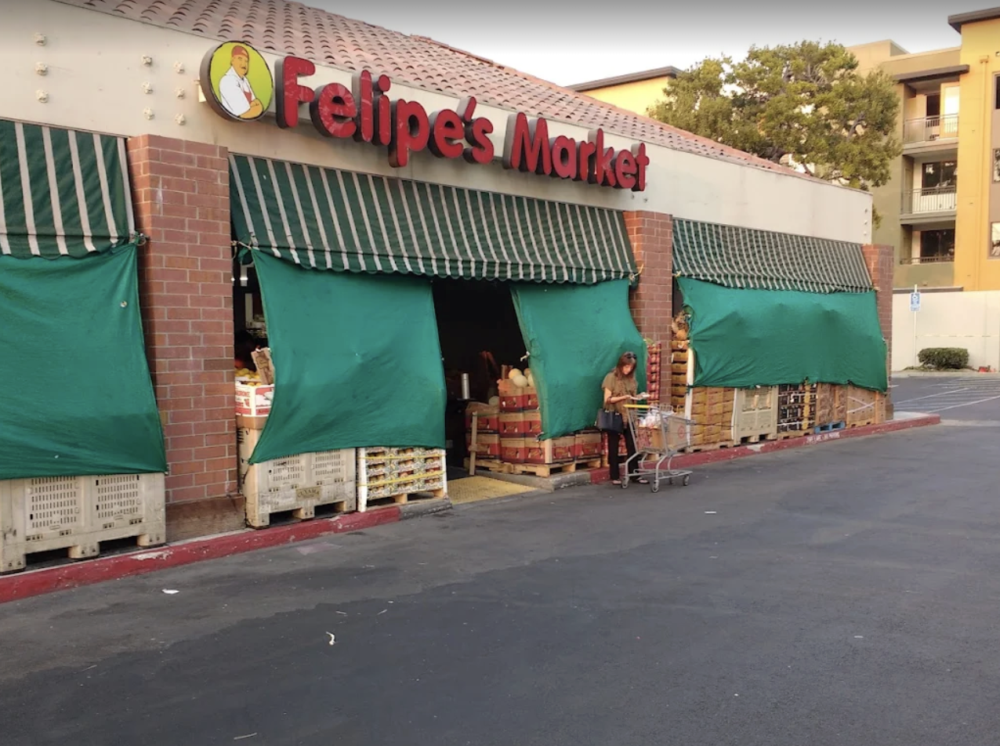
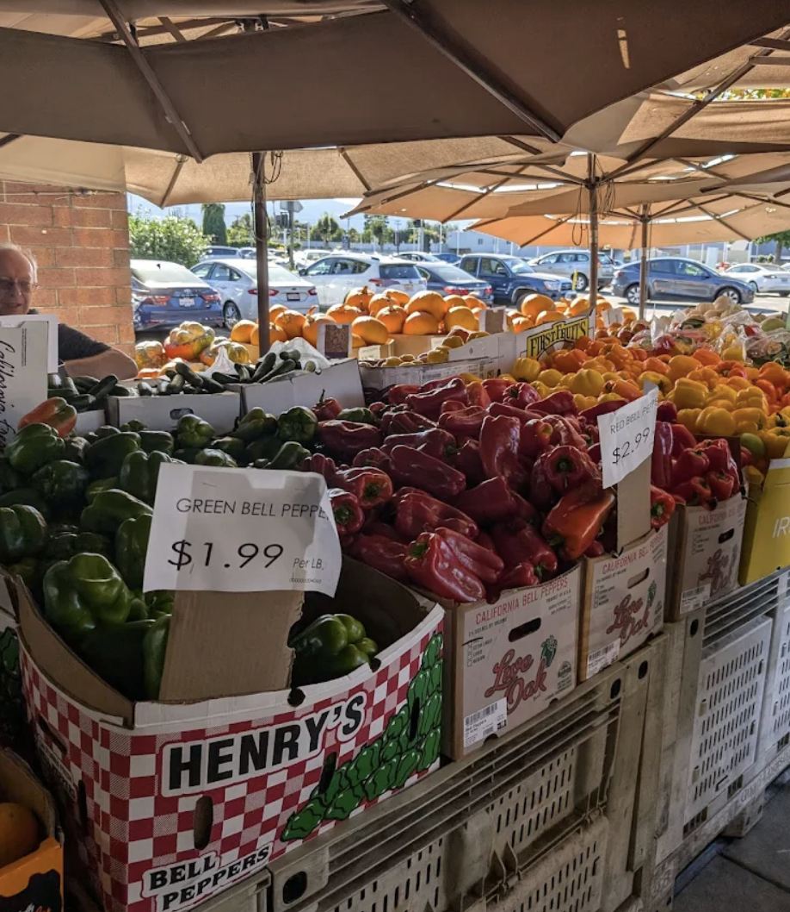
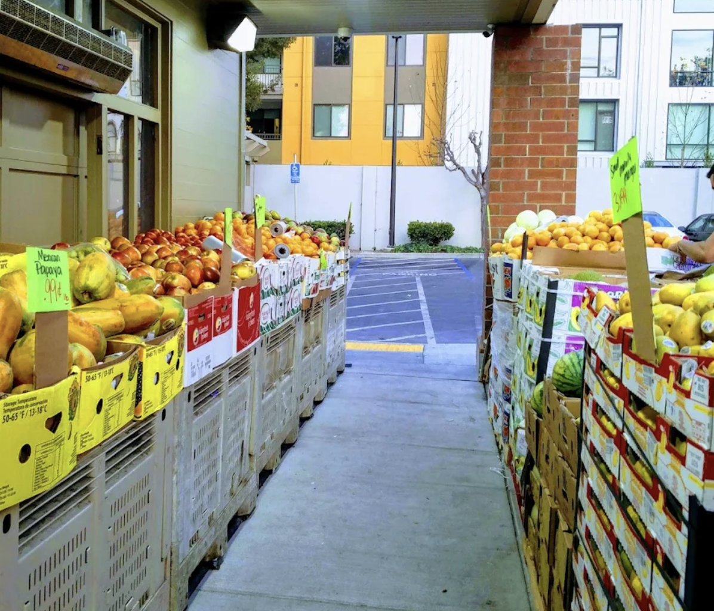
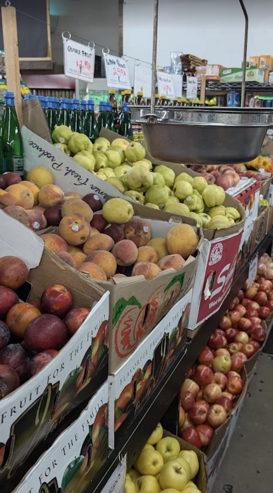
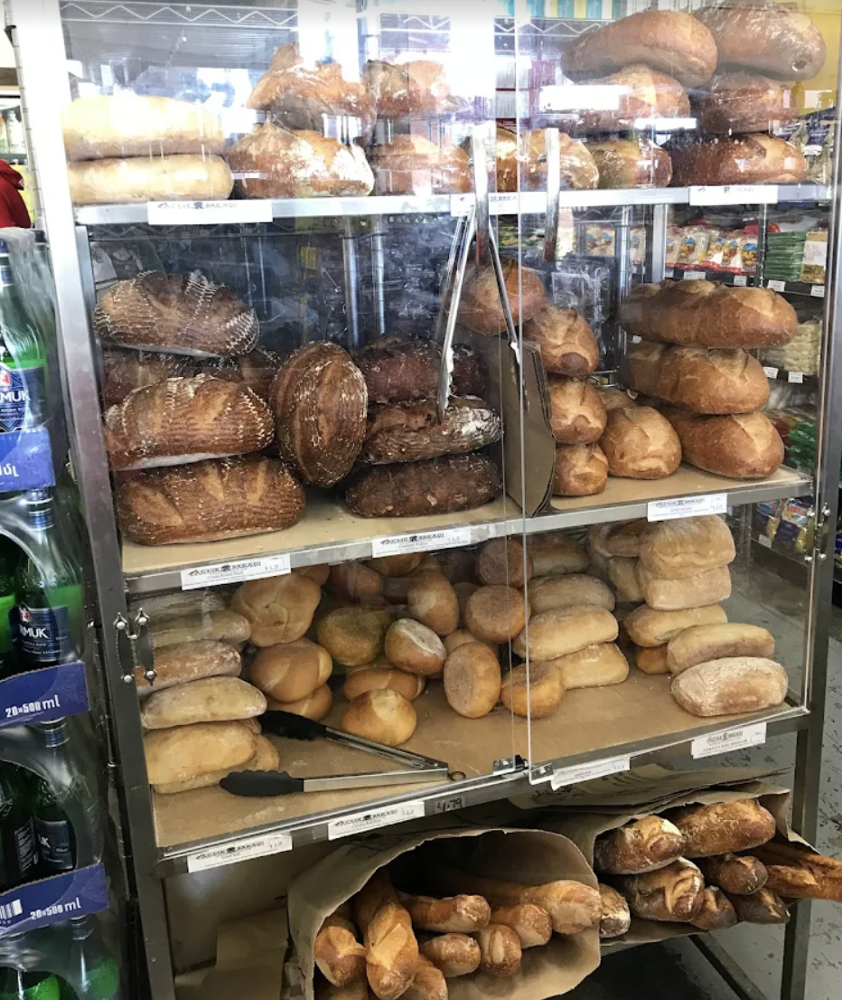
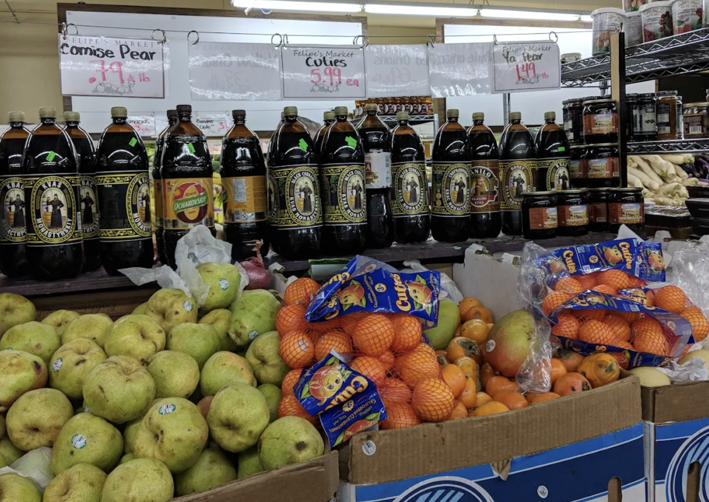
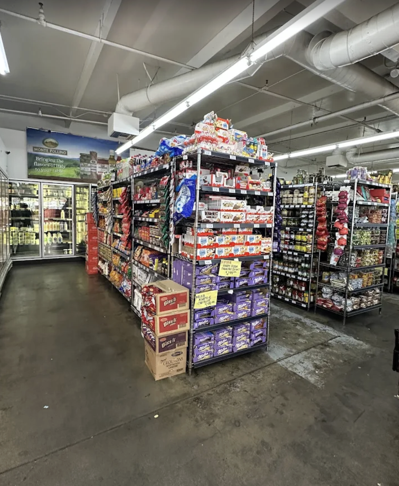
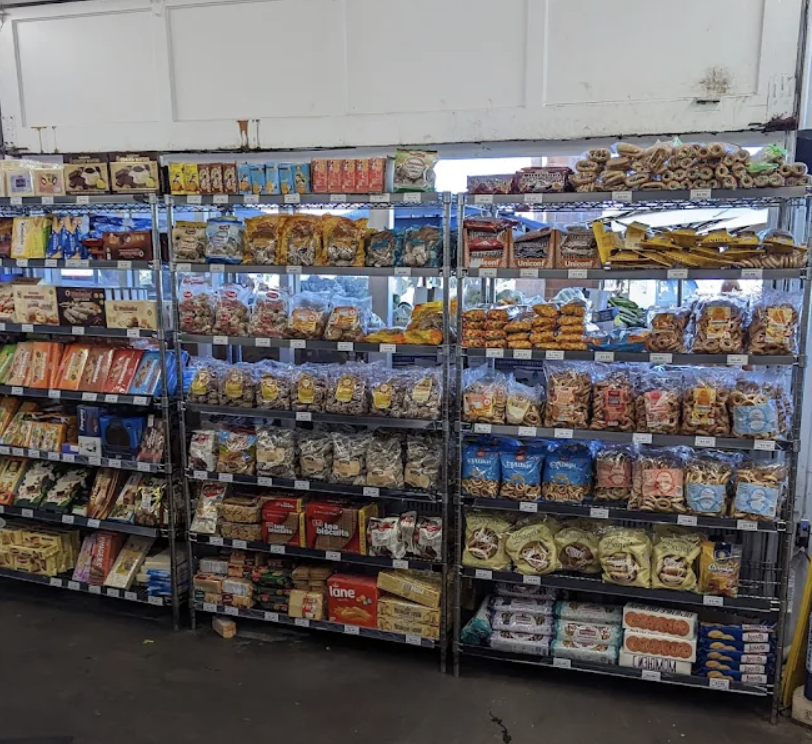

Fresh Produce
Seasonal fruit, vegetables, herbs, and market-style displays at the front door.
Family-owned grocery and specialty market
Felipe's Market brings together crisp produce, fresh bread, European cheeses, pantry staples, and international favorites in a neighborhood market that feels warm, abundant, and easy to shop every day.


About Felipe's
Felipe's Market is a family-owned grocery store in Sunnyvale known for produce displayed market-style, quality ingredients, fair pricing, and a friendly team that keeps the store feeling personal.
Shoppers come for fresh fruits and vegetables, then stay for warm bread, European cheeses, chocolates, and specialty finds that make everyday cooking feel a little more special.

What We Offer
Seasonal fruit, vegetables, herbs, and market-style displays at the front door.
Rustic loaves, rolls, and bakery staples that feel freshly stocked and ready.
Imported pantry items and regional favorites that add range beyond a standard market.
Milk, cheese, eggs, and everyday basics balanced with quality and convenience.
European chocolates, biscuits, and shelf finds worth browsing for.
Why People Love Us

Gallery




Visit Us
1101 W El Camino Real
Sunnyvale, CA 94087
Open daily from 7:00 AM to 10:00 PM
Open in Maps